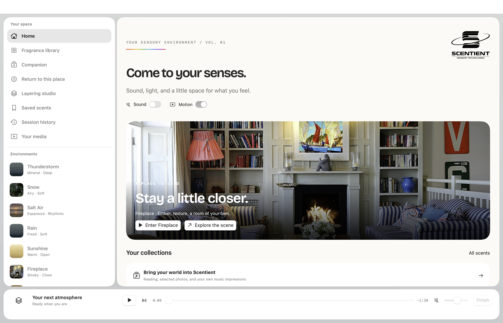
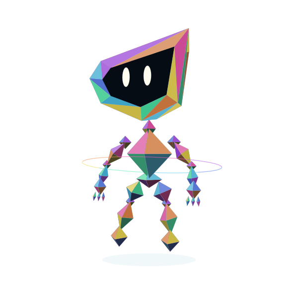

Start with
a human moment.
Rain on warm pavement. A familiar kitchen. The smell of a place you thought you had forgotten.
We experience the world through many senses at once. Memory gives those sensations personal meaning. Scentient is building technology that brings this dimension of experience into the way intelligent systems understand and serve people.
Our thesis ↗Tell it. Explore it.
Make it your own.
Voice, imagery, sound, and spatial environments create new ways to express a scent memory. A person can explore an atmosphere, refine what feels right, and connect that experience with fragrance.


One memory.
Many senses.
We are building a large-scale multimodal scent-memory episode program: connecting scent with language, imagery, sound, place, emotion, and personal meaning.
The opportunity begins with real participation in sensory experiences. These are relationships with the world that a catalog description alone cannot capture.
The scent-memory program ↗A more personal
kind of agent.
Prizm explores how an agent can work with a person’s intentions and sensory context, then remain responsive as their understanding changes.
A separate embodied research program studies agents in environments where observation and action have consequences. Together, these directions ask what it takes for intelligence to learn from experience.
Meet Prizm ↗
Scentient builds
the technology.
Demeter brings
the fragrance.
Demeter Fragrance Library is Scentient’s first commercial and physical setting.
Its fragrances, expertise, and customer experiences provide a tangible place to begin. Our application direction spans discovery on the Demeter website, in-store sensory encounters, and the possibilities of personalized physical creation.
The Scentient–Demeter relationship ↗More faithful to
the person it serves.
Can understanding human experience help an agent interpret an intention, recognize uncertainty, respond to correction, and preserve what matters as models and contexts change?
These are concrete questions in our personal-alignment research. We study their relationship to broader AI alignment while keeping human benefit and machine-task performance distinct.
Beyond
the screen.
The sensory layer matters wherever intelligence meets experience.
Our embodied research extends into spatial environments and robotics. Early bottling simulations are one concrete example: exploring a path from fragrance intent toward physical creation.
Agents, environments & robotics ↗